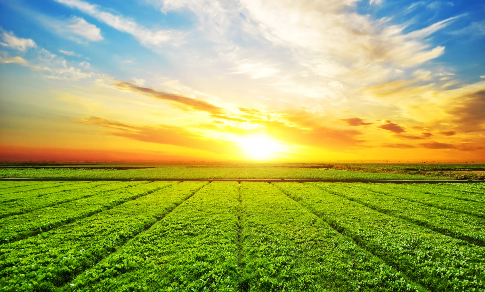
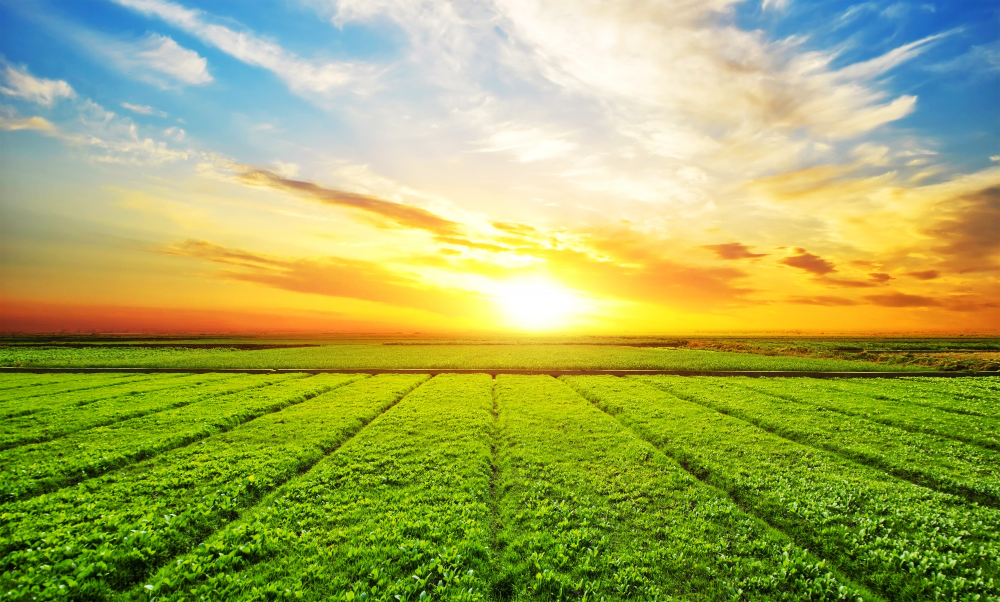

Interdependência Econômica
O campo produz o alimento que a cidade consome, enquanto a cidade fornece bens industriais, serviços e tecnologia ao campo.
Problema: Quando essa troca é desigual, o campo fica empobrecido e as cidades, sobrecarregadas.
Movimento de Pessoas
Muitos saem do campo em busca de oportunidades, mas as cidades nem sempre estão preparadas para recebê-los (falta de emprego, moradia).
Agora, com o home office, alguns estão voltando, revitalizando pequenos povoados.
Desafios para o Futuro
Melhorar estradas, internet e acesso a saúde no campo para reduzir a migração forçada. Criar políticas que valorizem quem produz comida sem destruir o meio ambiente.